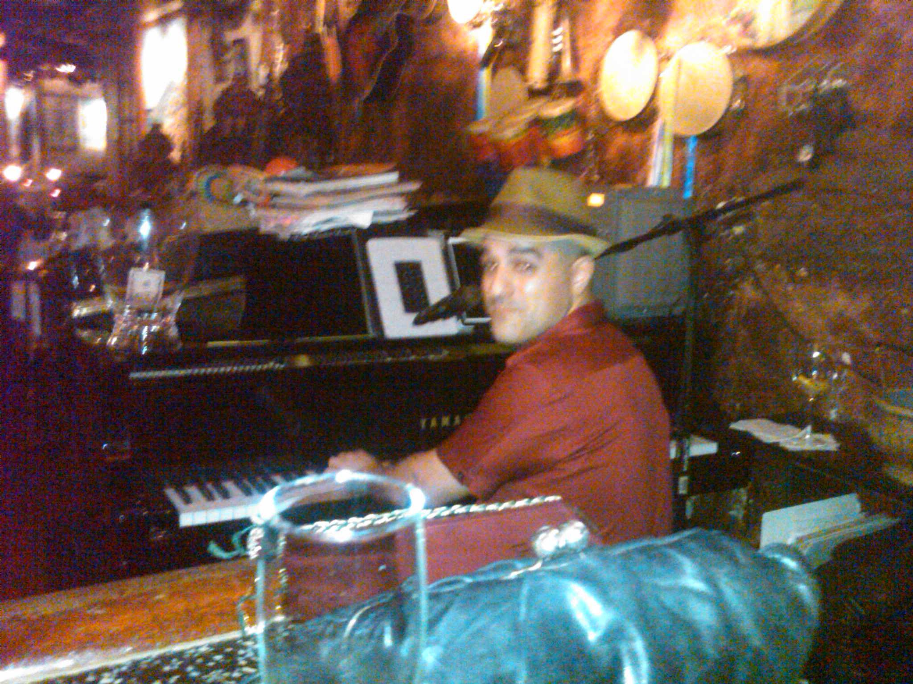

Freelance
Working at Wedding
The Newport Folk Festival is one of my very favorite festivals in the entire world because the people are great, the music is amazing and things happen at Newport that happen nowhere else. It's an ever-evolving festival that's been around for over 50 years and was founded by music impresario George Wein (who also founded the Newport Jazz Festival and Jazz Fest in New Orleans) along with the spiritual guidance of Pete Seeger. Both men hoped to give a voice to artists who are not afraid to speak truth to power. On this special All Songs Considered episode, I talk to Jay Sweet, the executive producer of the festival. We talk about the artists we're most excited to see, from the 20-year-old newcomer Raury to my favorite comedy group, Flight Of The Conchords, plus Rayland Baxter, Margo Price, Joan Shelley and many more.
Working at the bar
The Newport Folk Festival is one of my very favorite festivals in the entire world because the people are great, the music is amazing and things happen at Newport that happen nowhere else. It's an ever-evolving festival that's been around for over 50 years and was founded by music impresario George Wein (who also founded the Newport Jazz Festival and Jazz Fest in New Orleans) along with the spiritual guidance of Pete Seeger. Both men hoped to give a voice to artists who are not afraid to speak truth to power. On this special All Songs Considered episode, I talk to Jay Sweet, the executive producer of the festival. We talk about the artists we're most excited to see, from the 20-year-old newcomer Raury to my favorite comedy group, Flight Of The Conchords, plus Rayland Baxter, Margo Price, Joan Shelley and many more.